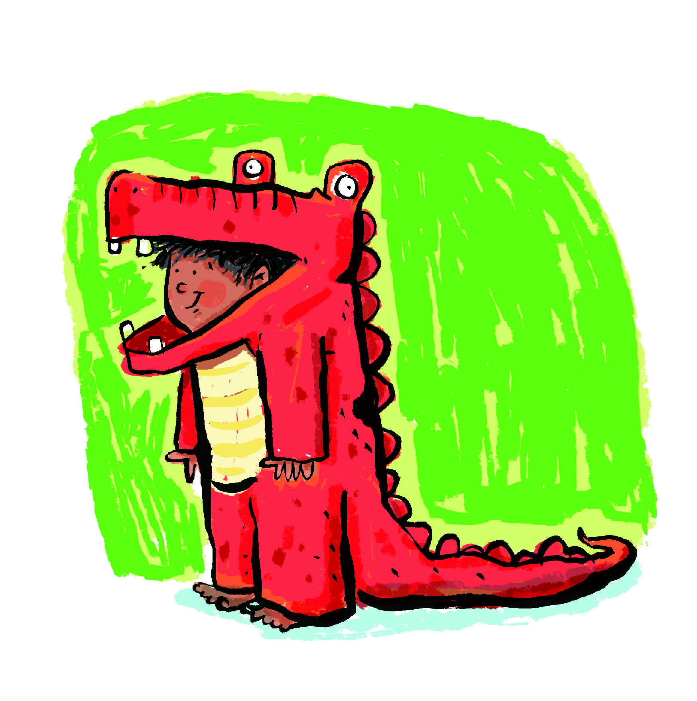
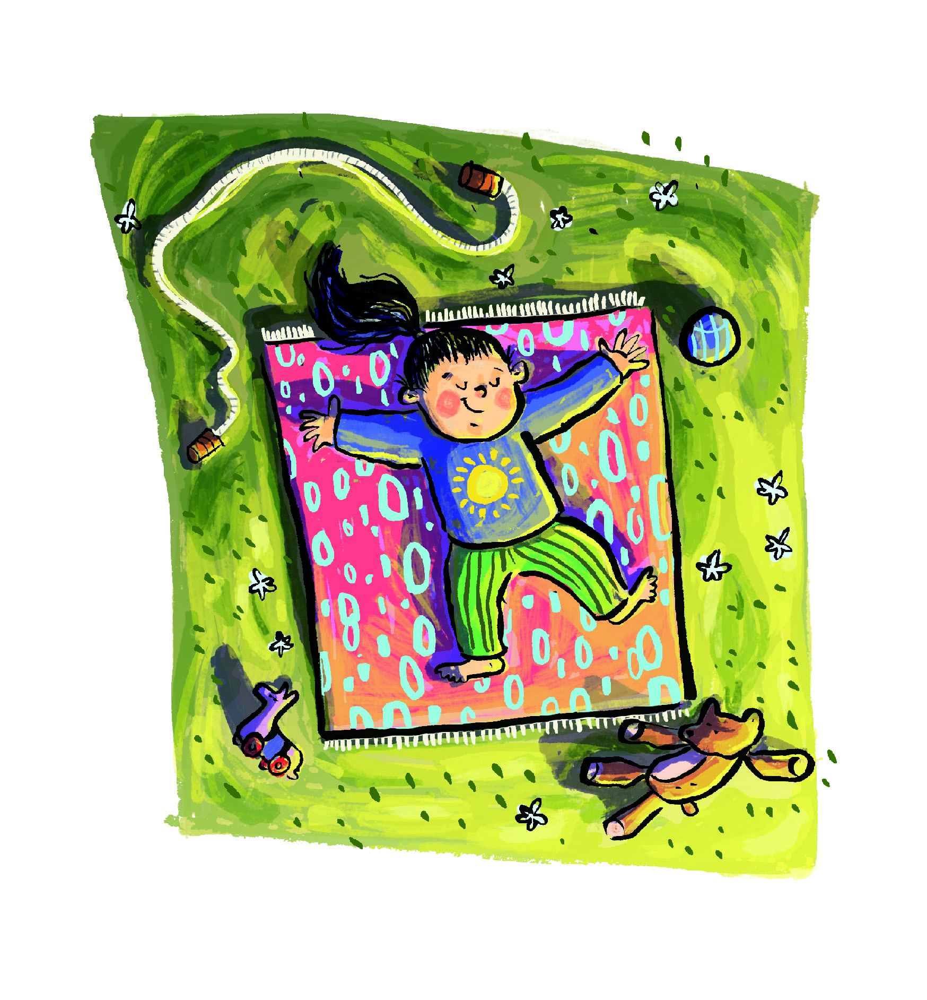
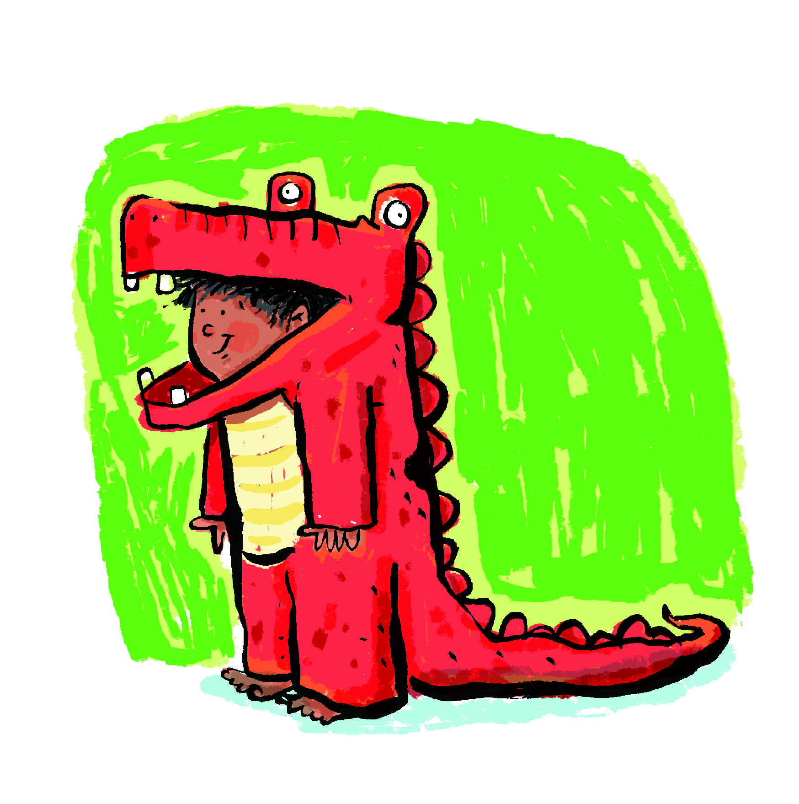
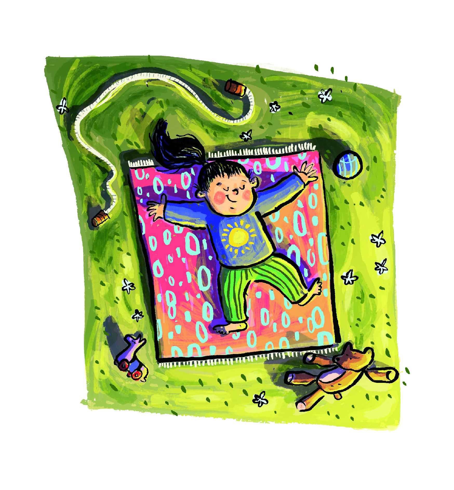
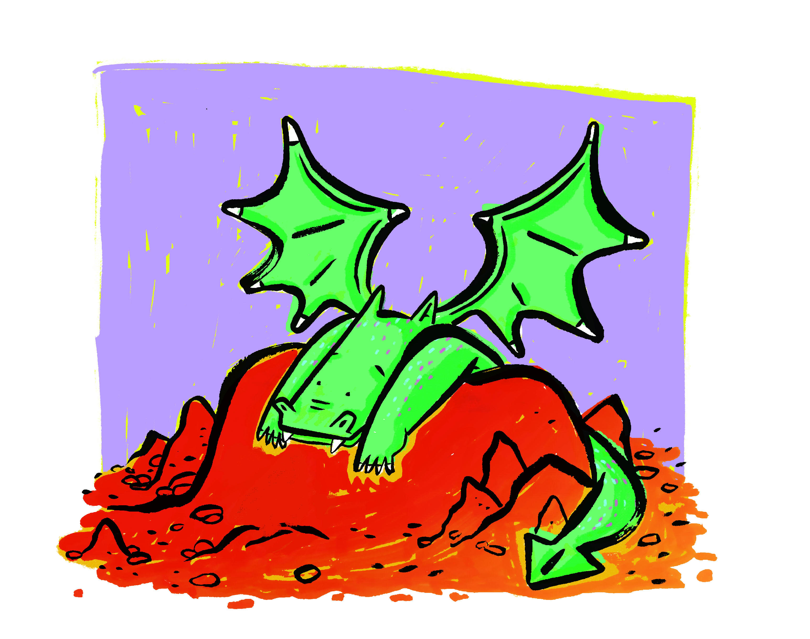
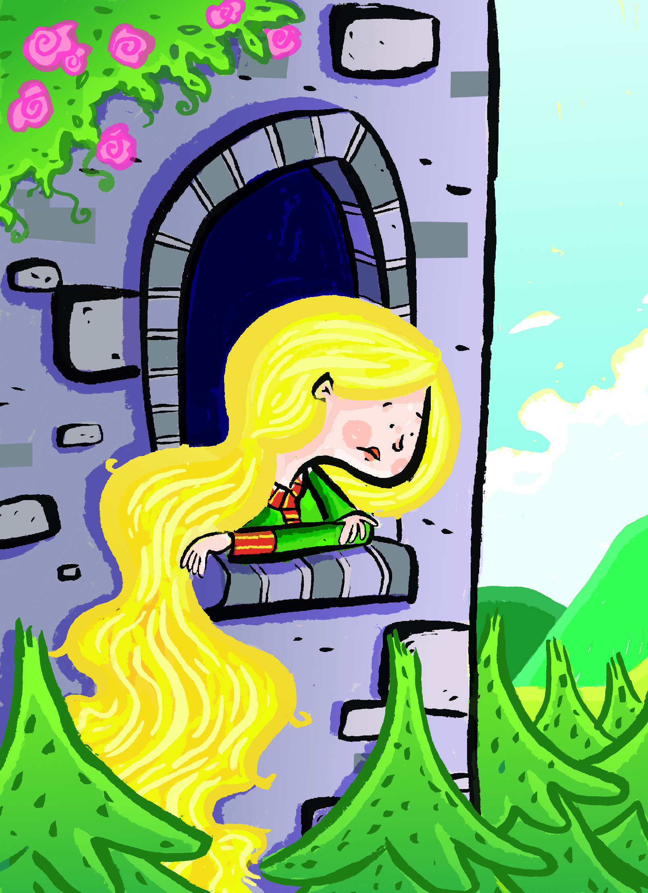
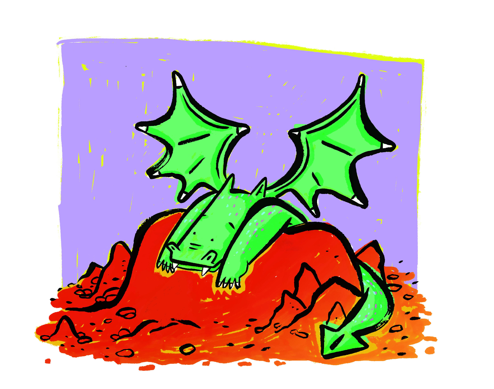
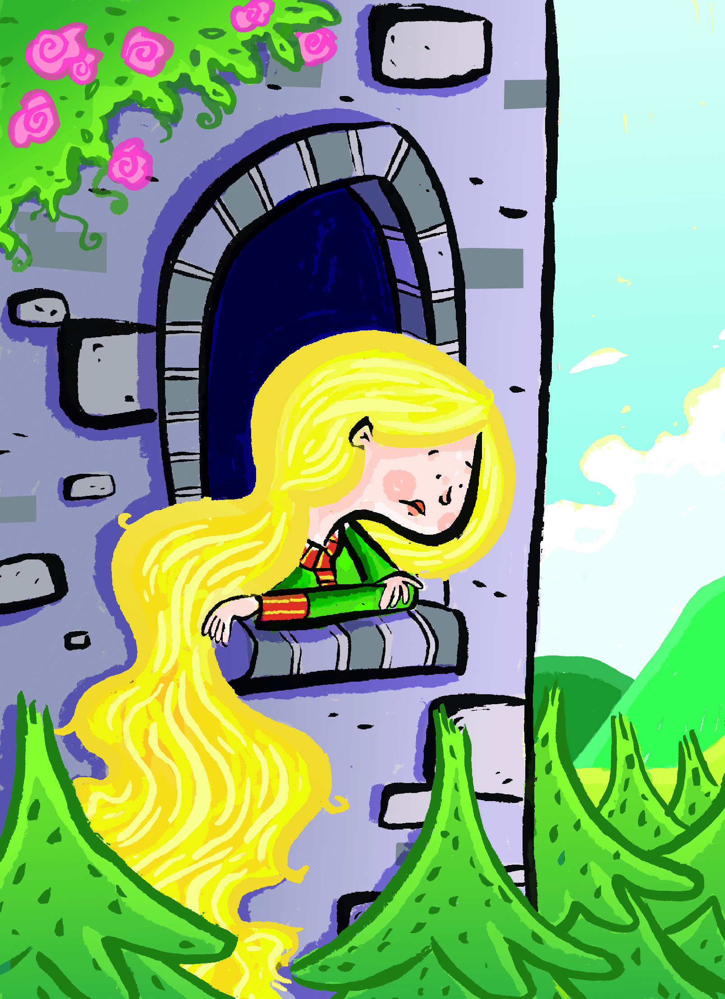

Books

The Big Hug
On opposite sides of a quiet street lived two friends. From morning to evening, they played. ‘‘You two are stuck together like glue!’’ their parents and teachers laughed. So it was a shock when, one day, they had to stop and go inside. Between them now was only space. Suddenly, outside was scary and felt very large. Their parents were full of whispers and frowns and the worry inside felt heavy. Where can you put friendship when friends are apart? Slowly, they learned. They found that, across the street and through windows, they could give each other a hug. They discovered that a smile is a hug. A wave is a hug. And funny faces, a phone call, a song. They discovered that when you’re apart a friendship doesn’t leave. With time and effort it will grow and grow, until it is big, bigger than all fears. Inspired by real-world events, The Big Hug is a story of love’s resilience.
Franny's Father is a Feminist
Franny’s Father is a Feminist. It’s simple, really! He knows that girls can do anything boys can do, and raises Franny to believe that she deserves all the same rights, freedoms, and opportunities to fulfill her dreams that he had. Through sweet, straight-forward prose, Franny’s Father portrays the loving bond between a young girl, and her father who isn’t afraid of bucking gender norms in order to ensure that his daughter grows up smart, strong, and full of self confidence. From teaching her to fix her own bicycle and splashing in the mud, to cheering at ballet recitals and supporting Franny’s mother in her career, Franny’s Father displays what it means for a man to be a Feminist, and how male Feminism can play a vital role in the empowerment of young women.
 



 


